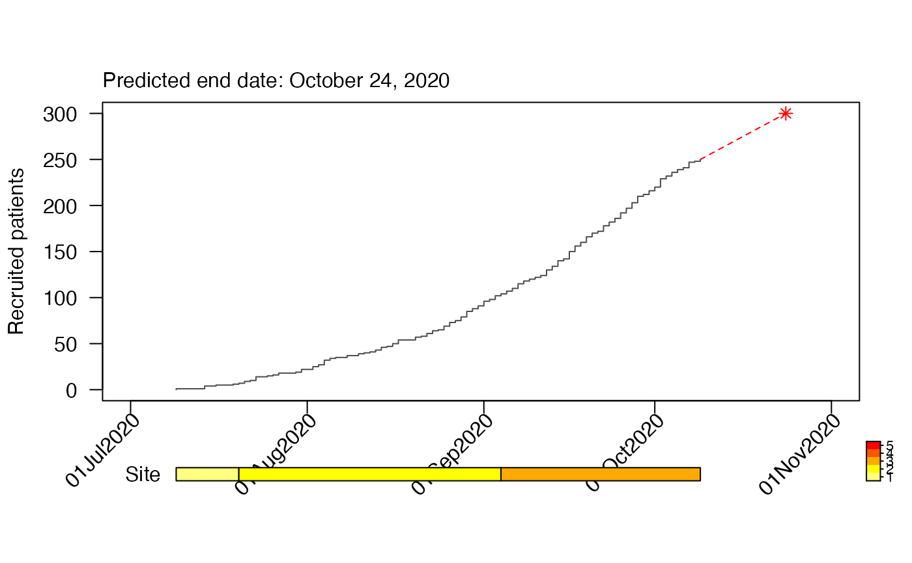
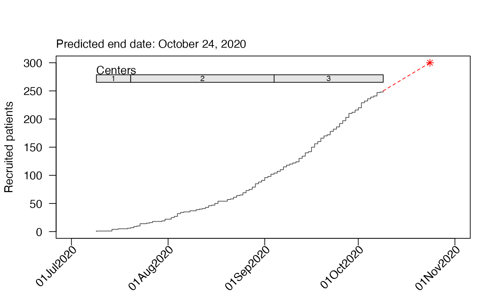
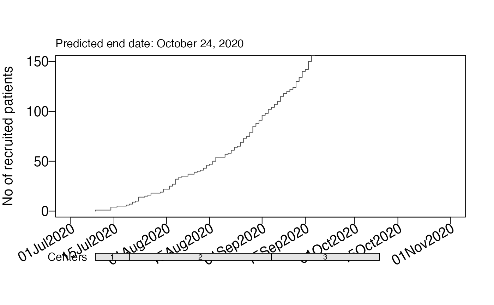

accrual_plot_predict
accrual_plot_predict.RdGenerates an accrual prediction plot based an accrual data frame (produced by accrual_create_df) and a target sample size. If the accrual data frame is a list (i.e. using the by option in accrual_create_df, or if center start dates are given, the number of enrolled and targeted sites is included.
accrual_plot_predict( accrual_df, target, overall = TRUE, name_overall = "Overall", fill_up = TRUE, wfun = function(x) seq(1/nrow(x), 1, by = 1/nrow(x)), col.obs = NULL, lty.obs = 1, col.pred = "red", lty.pred = 2, pch.pred = 8, pos_prediction = c("out", "in", "none"), label_prediction = "Predicted end date: ", cex_prediction = 1.1, format_prediction = "%B %d, %Y", show_center = TRUE, design = 1, center_label = "Centers", center_legend = c("number", "strip"), targetc = NA, center_colors = NULL, center_legend_text_size = 0.7, ylim = NA, xlim = NA, ylab = "Recruited patients", xlabformat = "%d%b%Y", xlabn = 5, xlabminn = xlabn%/%2, xlabpos = NA, xlabsrt = 45, xlabadj = c(1, 1), xlabcex = 1, mar = NA, legend.list = NULL, ..., center_start_dates = NULL )
Arguments
| accrual_df | accrual data frame produced by accrual_create_df (optionally with by option as a list) |
|---|---|
| target | target sample size, if it is a vector with the same length as accrual_df, center-specific predictions are shown |
| overall | logical, indicates that accrual_df contains a summary with all sites (only if by is not NA) |
| name_overall | name of the summary with all sites (if by is not NA and overall==TRUE) |
| fill_up | whether to fill up days where no recruitment was observed, otherwise these points do not contribute to the regression, default is yes |
| wfun | function to calculate the weights based on the accrual data frame, default is wfun<-function(x) seq(1 / nrow(x), 1, by = 1/nrow(x)) |
| col.obs | line color of cumulative recruitment, can be a vector with the same length as accrual_df |
| lty.obs | line type of cumulative recruitment, can be a vector with the same length as accrual_df |
| col.pred | line color of prediction, can be a vector with the same length as accrual_df |
| lty.pred | line color of prediction, can be a vector with the same length as accrual_df |
| pch.pred | point symbol for end of prediction, can be a vector with the same length as accrual_df |
| pos_prediction | position of text with predicted end date, out, in or none |
| label_prediction | label for predicted end date |
| cex_prediction | text size for predicted end date |
| format_prediction | date format for predicted end date |
| show_center | logical, whether the center info should be shown (if accrual_df is a list or if center_start_dates are given) |
| design | design options for the center info 1 (default): below plot, 2: within plot, top, 3: within plot, bottom |
| center_label | label for the center info |
| center_legend | either "number" to plot numbers in the center strip or "strip" to add a legend strip, requires specification of center_colors |
| targetc | target number of centers, to scale the legend if it is "strip" |
| center_colors | colors to be used for the strip with the centers, a vector of length targetc |
| center_legend_text_size | size of the text of the center or legend strip, only has a function |
| ylim | limits for y-axis, can be a vector with the same length as accrual_df |
| xlim | limits for x-axis, can be a vector with the same length as accrual_df |
| ylab | y-axis label |
| xlabformat | format of date on x-axis |
| xlabn | integer giving the desired number of intervals for the xlabel, default=5 |
| xlabminn | nonnegative integer giving the minimal number of intervals |
| xlabpos | position of the x-label, can be a vector with the same length as accrual_df |
| xlabsrt | rotation of x-axis labels in degrees |
| xlabadj | adjustment of x-label, numeric vector with length 1 or 2 for different adjustment in x- and y-direction |
| xlabcex | size of x-axis label |
| mar | vector of length 4 (bottom, left, top, right margins), overwrite default margins |
| legend.list | named list with options passed to legend(), only if accrual data frame is a list |
| ... | further options passed to plot() and axis() |
| center_start_dates | alternative way to add center info, vector with dates on which centers are enrolled |
Value
A plot with cumulative accrual and the prediction to the end date.
Examples
#Data set.seed(2020) enrollment_dates <- as.Date("2018-01-01") + sort(sample(1:30, 50, replace=TRUE)) #Default plot accrual_df<-accrual_create_df(enrollment_dates) accrual_plot_predict(accrual_df=accrual_df,target=100)#Include site set.seed(2021) centers<-sample(c("Site 1","Site 2","Site 3"),length(enrollment_dates),replace=TRUE) accrual_df<-accrual_create_df(enrollment_dates,by=centers) accrual_plot_predict(accrual_df=accrual_df,target=100,center_label="Site")
## with strip and target accrual_plot_predict(accrual_df=accrual_df,target=100,center_label="Site", targetc=5,center_colors=heat.colors(5),center_legend="strip")
#Design for site accrual_plot_predict(accrual_df=accrual_df,target=100,design=2)  #Format prediction end date accrual_plot_predict(accrual_df=accrual_df,target=100, pos_prediction="in",label_prediction="End of accrual: ",cex_prediction=1.2, format_prediction="%Y-%m-%d",ylim=c(0,150))  #Format plot accrual_plot_predict(accrual_df=accrual_df,target=100, ylab="No of recruited patients",ylim=c(0,150), xlabcex=1.2,xlabsrt=30,xlabn=5,xlabmin=5, mgp=c(3,0.5,0),cex.lab=1.2,cex.axis=1.2)
#predictions for all sites accrual_plot_predict(accrual_df=accrual_df,target=c(30,30,30,100))  ## different colors accrual_plot_predict(accrual_df=accrual_df,target=c(30,30,30,100), col.obs=topo.colors(length(accrual_df)))
##not showing center info accrual_plot_predict(accrual_df=accrual_df,target=c(30,30,30,100),show_center=FALSE)